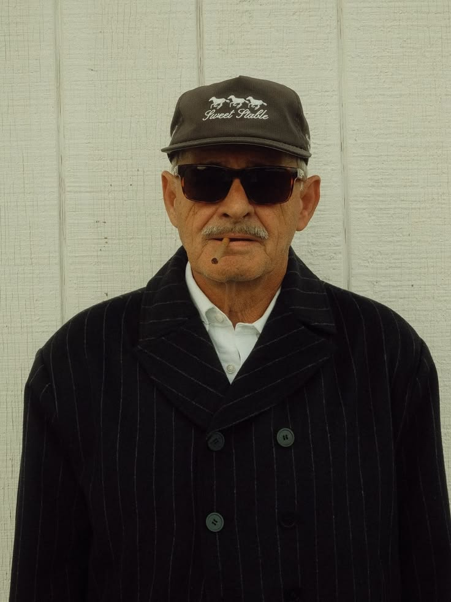

Foto belum ditambahkan
Ciremai Hiking Guide
Rancangan aplikasi yang memuat informasi jalur dan persiapan pendakian.
Muhammad Irhamni
Saya sedang belajar mengembangkan website, membuat aplikasi, dan memahami pengolahan data melalui berbagai project dan tugas perkuliahan.
Beberapa proyek dan latihan yang saya kerjakan selama belajar.
Belum ada proyek pada kategori ini.
Memuat proyek...
Rancangan aplikasi yang memuat informasi jalur dan persiapan pendakian.
Rancangan aplikasi untuk melaporkan kerusakan fasilitas kampus.
Latihan untuk mempelajari pengolahan data dan dasar model prediksi.
Masuk admin untuk menambah, mengubah, atau menghapus proyek. Perubahan disimpan di server.

Tentang
Perkenalkan, saya Muhammad Irhamni, mahasiswa Teknik Informatika di Universitas Muhammadiyah Cirebon. Saat ini saya sedang mempelajari pengembangan web, pemrograman, UI/UX, dan machine learning.
Melalui portfolio ini, saya ingin menyimpan project yang pernah saya kerjakan serta tugas dan hasil pembelajaran selama kuliah.
Semester 5 · Tahun Akademik 2026/2027
Tugas disimpan di database. File yang diunggah disimpan di server.
Masuk untuk mengelola tugasTempat untuk menyimpan catatan kuliah, dokumentasi praktikum, dan proses pengerjaan proyek.
Rangkuman materi perkuliahan.
Dokumentasi praktikum.
Catatan selama mengerjakan proyek.
Hal yang sedang dipelajari dan dicoba.
Belum ada catatan arsip yang ditambahkan.
Lihat tugas kuliahKontak
Silakan hubungi saya melalui akun berikut.